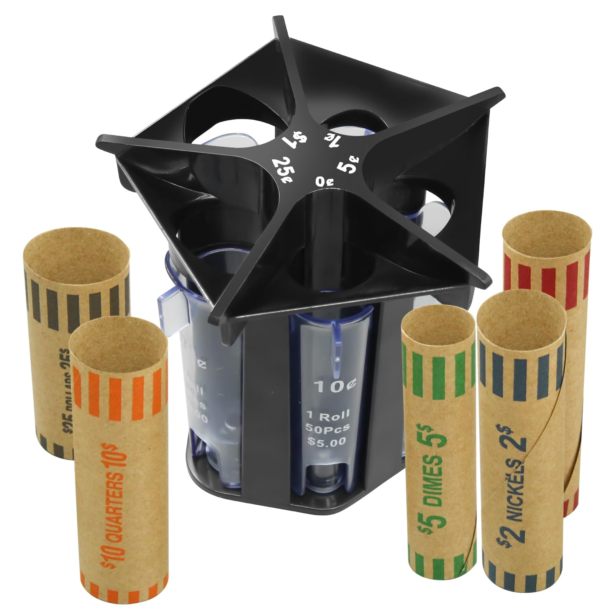
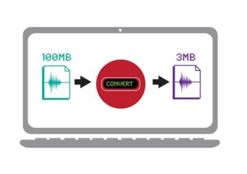

I am currently a junior majoring in Computer Science at the University of Indianapolis, where I’ve been developing a strong foundation in software development, problem-solving, and systems thinking. Throughout my academic journey, I’ve discovered a growing interest in cybersecurity, particularly in understanding how to build secure systems and protect data in an increasingly connected world.
Alongside my studies in cybersecurity, I have been exploring both front-end and back-end web development. I enjoy the creative aspect of designing intuitive user interfaces, as well as the logical structure and problem-solving involved in server-side development. I’m currently working on expanding my skills in HTML, CSS, JavaScript, and Python, while also learning frameworks and tools that are widely used in the industry.
I’m actively seeking opportunities where I can apply what I’ve learned, gain hands-on experience, and continue growing as a developer with a focus on secure, well-designed applications. I'm excited to contribute to a team, learn from professionals in the field, and bring my passion for technology into real-world projects.
Education
- University of Indianapolis
Skills
- Proficient in C#, C++, Python, Javascript programming languages
- Excel in critical thinking, teamwork, and problem-solving
- Highly adaptable to changing priorities and flexible in changing tools, new processes in agile environments
- Understands end-users’ pain points when designing experiences and actively foster trust and psychological safety with my team

Coin Sorter
For an engineeering course project, I coded a coin sorter application that simulates the detection, classification, and counting of coins based on user input or sensor-based data. The program was developed using C++ and implements core programming concepts such as conditional logic, data structures, loops, and object-oriented design.
The coin sorter takes input values representing different coin sizes or weights and accurately sorts them into categories (e.g., pennies, nickels, dimes, quarters). It also maintains a real-time count and total monetary value. This project strengthened my problem-solving skills and gave me hands-on experience in building practical tools that combine both logical structuring and real-world applications, such as currency handling and automation.
In addition, the project laid the groundwork for potential hardware integration using microcontrollers (e.g., Arduino or Raspberry Pi) to create a physical coin sorter in the future.

Custom Data Compression Tool
I developed a custom data compression tool using C++, focusing on efficient storage and transmission of large text files. The program implements a basic compression algorithm inspired by Huffman coding, which reduces file size by encoding frequently used characters with shorter binary representations.
This project challenged me to apply advanced C++ concepts such as dynamic memory management, file I/O operations, bit manipulation, and the use of data structures like trees, maps, and priority queues. The tool includes both compression and decompression functionalities, allowing users to restore original files with accuracy.
Through this project, I gained deeper insight into algorithm design, performance optimization, and real-world applications of data encoding. It also reinforced my ability to write clean, modular code and handle complex logic systematically.